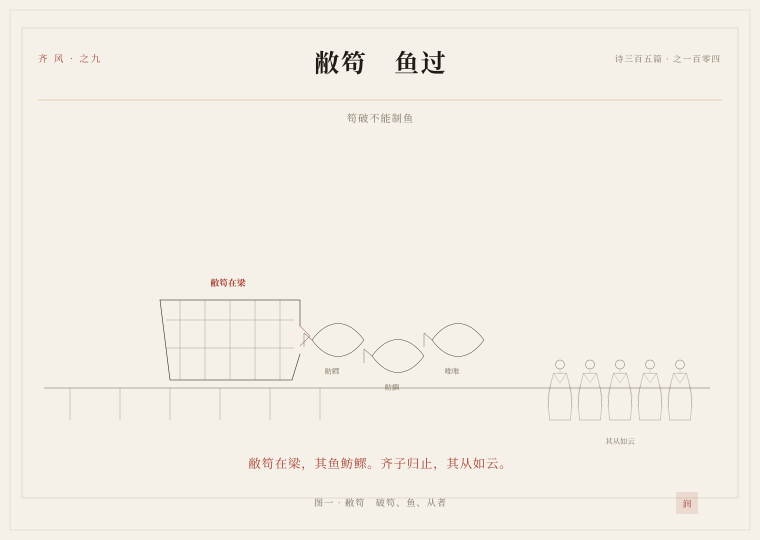
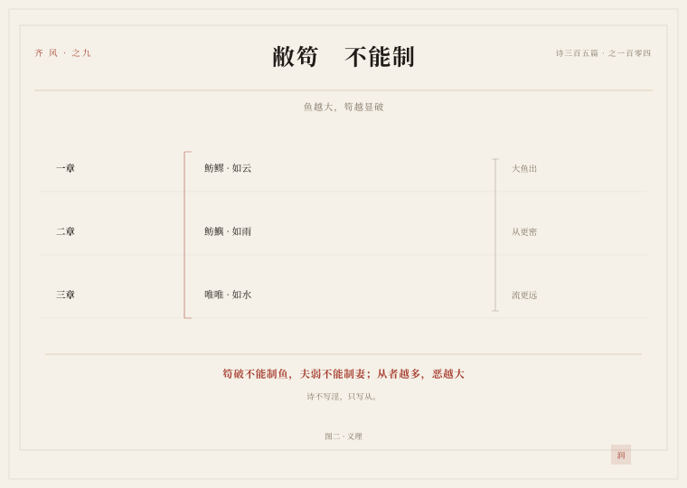

第一百零四篇 敝笱
齐风 · 之九 SJ104
朗读 · 普通话
依经文原文朗读，章次不读出；配古琴底乐，不改速、不加拖腔。全库同一音色（豆包 TTS），非播音员录制。
一 解题
诗三判：
- 谁在说：齐人。恶文姜淫乱，归咎鲁桓公微弱，不能防闲；朱熹则以为比鲁庄公不能防闲其母。
- 说什么事：敝笱在梁，鱼鲂鳏、鲂鱮、唯唯；齐子归止，从者如云、如雨、如水。
- 为何编在此：103 写“犬”，104
写“笱”。一猎一渔，皆以器物见政；犬铃在野，破笱在梁。
《毛序》：“《敝笱》，刺文姜也。齐人恶鲁桓公微弱，不能防闲文姜，使至淫乱，为二国患焉。”
朱子《诗集传》：“比也。敝，坏；笱，罟也。鲂、鳏，大鱼也。归，归齐也。如云，言众也。齐人以敝笱不能制大鱼，比鲁庄公不能防闲文姜，故归齐而从之者众也。……鱮，似鲂，厚而头大，或谓之鲢；如雨，亦多也。唯唯，行出入之貌；如水，亦多也。”
本库的看法：《敝笱》是一首把“不能制”写成“笱破”的诗。
笱是竹制的渔具，破笱在鱼梁上，大鱼从容出入；鱼越大，笱越显破；从者越多，夫越显弱。
三章只换鱼名与“如云/如雨/如水”，不写一句“淫”；从者之盛，就是淫之盛。
先辨五事：“敝”是破，不是“敝人”；“笱”是竹渔器，不是“笱笼”；“梁”是鱼梁，不是桥梁；“鳏”是大鱼，不是“鳏夫”；“齐子”是文姜，不是齐侯。
二 经文
第一章
敝笱在梁，其鱼鲂鳏。
齐子归止，其从如云。
第二章
敝笱在梁，其鱼鲂鱮。
齐子归止，其从如雨。
第三章
敝笱在梁，其鱼唯唯。
齐子归止，其从如水。
分章：三章，章四句。
三 韵读
- 一章：鳏、云，文部。
- 二章：鱮、雨，鱼部。
- 三章：唯、水，微部。
读法：文部沉，鱼部敞，微部收；鱼由大而小，从由云而雨而水，势越流越远。
四 字义与名物
- 敝：破旧；笱：竹制捕鱼器；梁：鱼梁，拦水以捕鱼。
- 鲂：鳊鱼；鳏：大鱼；鱮：似鲂而头大；唯唯：鱼出入相随之貌。
- 齐子：文姜；归：归齐；止：语辞。
- 从：随从；如云/如雨/如水：皆言众，且一层比一层流动。
- 防闲：防，堤岸；闲，栏槛；喻礼法约束。不能防闲，即不能约束。
五 今译
破笱在鱼梁上，鱼是鲂和鳏。文姜归齐，随从多得像云。
破笱在鱼梁上，鱼是鲂和鱮。文姜归齐，随从多得像雨。
破笱在鱼梁上，鱼唯唯出入。文姜归齐，随从多得像水。
六 章旨
- 一章：写“鲂鳏”与“云”。大鱼出破笱，从者如云；鱼大，笱破。
- 二章：写“鲂鱮”与“雨”。鱼换，从者更密；雨比云更落。
- 三章：写“唯唯”与“水”。鱼自由出入，从者如水；水比雨更流。
- 总收：笱破不能制鱼，夫弱不能制妻；从者越多，恶越大。
诗不写“淫”，只写“从”；从者盛，恶自见。
七 诗教
- 比：以破笱比夫，以鱼比妻，以从者比恶；比一立，刺就明。
- 观：观“防闲”。礼法不是束缚，是堤岸；岸一破，水就漫。
- 群：文姜归齐，从者如云；一人之淫，能带一群。
- 怨：诗里有恶，无怨。恶在“不能”，怨在“夫弱”。
八 分寸与边界
- 不可把“敝笱”当破篮子。它是渔具；一读篮子，鱼梁就没了。
- 不可把“梁”当桥梁。它是鱼梁；一读桥梁，笱就无处放。
- 不可把“鳏”当鳏夫。它是大鱼；一读鳏夫，诗就成婚姻。
- 不可把“如云”当云彩。它是从者之众；一读云彩，诗就成写景。
- 不可把“齐子”当齐侯。她是文姜；一读齐侯，归齐就成归国。
九 存疑
- 诗旨：毛序“刺文姜，恶鲁桓微弱”；朱子“比鲁庄公不能防闲文姜”。一桓一庄，本库两存，以“不能制”读。
- “鳏”：毛传“大鱼”；郑笺“鱼子”。从大鱼，才与“破笱不能制”相应。
- “唯唯”：毛传“出入不制”；朱子“行出入之貌”。两读相通。
- “归”：毛传“归齐”；一说“归止”为嫁归。从归齐，才与从者相应。
- 作者与年代：毛序属文姜、桓公；朱子属庄公。二说并存。
十 跨典
- 《左传·桓公十八年》：文姜如齐，齐侯通焉；桓公薨于齐。此诗“归齐”之本事。
- 《诗经·齐风·南山》：“鲁道有荡，齐子由归。”——同一文姜，同一鲁道；两篇互证。
- 《诗经·齐风·载驱》：“齐子发夕”“齐子翱翔”。——归齐之后，驱驰会齐；三篇成串。
- 《诗本音》：三章文、鱼、微，见卷五；韵部按古韵推定。
十一 双卡与图
双卡八对：
| 敝（破旧） |
敝（敝人） |
| 笱（竹渔器） |
笱（笱笼） |
| 梁（鱼梁） |
梁（桥梁） |
| 鳏（大鱼） |
鳏（鳏夫） |
| 鲂/鱮（鱼名） |
鲂（鲂鱼泛称） |
| 齐子（文姜） |
齐子（齐侯） |
| 从（随从） |
从（顺从） |
| 如云/雨/水（众） |
如云（云彩） |

图一 · 敝笱 破笱、鱼、从者

图二 · 敝笱 笱不能制鱼
读图三处：
- 破笱在梁：图一左鱼梁，中一只破竹笱，缺口朝右；笱破不画全，只画缺口。
- 鱼过缺口：图一右三条鱼影，一大两小，皆向右出；鱼不画眼，只画身与尾。
- 从者如水：图二下一串人形，不画脸，只画衣与足；人越排越密，像水流。